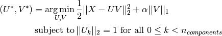
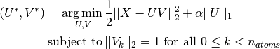

4.4. Decomposing signals in components (matrix factorization problems)¶
4.4.1. Principal component analysis (PCA)¶
4.4.1.1. Exact PCA and probabilistic interpretation¶
PCA is used to decompose a multivariate dataset in a set of successive orthogonal components that explain a maximum amount of the variance. In scikit-learn, PCA is implemented as a transformer object that learns n components in its fit method, and can be used on new data to project it on these components.
The optional parameter whiten=True parameter make it possible to project the data onto the singular space while scaling each component to unit variance. This is often useful if the models down-stream make strong assumptions on the isotropy of the signal: this is for example the case for Support Vector Machines with the RBF kernel and the K-Means clustering algorithm. However in that case the inverse transform is no longer exact since some information is lost while forward transforming.
In addition, the ProbabilisticPCA object provides a probabilistic interpretation of the PCA that can give a likelihood of data based on the amount of variance it explains. As such it implements a score method that can be used in cross-validation.
Below is an example of the iris dataset, which is comprised of 4 features, projected on the 2 dimensions that explain most variance:

4.4.1.2. Approximate PCA¶
Often we are interested in projecting the data onto a lower dimensional space that preserves most of the variance by dropping the singular vector of components associated with lower singular values.
For instance for face recognition, if we work with 64x64 gray level pixel pictures the dimensionality of the data is 4096 and it is slow to train a RBF Support Vector Machine on such wide data. Furthermore we know that intrinsic dimensionality of the data is much lower than 4096 since all faces pictures look alike. The samples lie on a manifold of much lower dimension (say around 200 for instance). The PCA algorithm can be used to linearly transform the data while both reducing the dimensionality and preserve most of the explained variance at the same time.
The class RandomizedPCA is very useful in that case: since we are going to drop most of the singular vectors it is much more efficient to limit the computation to an approximated estimate of the singular vectors we will keep to actually perform the transform.
For instance, the following shows 16 sample portraits (centered around
0.0) from the Olivetti dataset. On the right hand side are the first 16
singular vectors reshaped as portraits. Since we only require the top
16 singular vectors of a dataset with size  and
and  , the computation time it
less than 1s:
, the computation time it
less than 1s:

RandomizedPCA can hence be used as a drop in replacement for PCA minor the exception that we need to give it the size of the lower dimensional space n_components as mandatory input parameter.
If we note  and
and
 , the time complexity
of RandomizedPCA is
, the time complexity
of RandomizedPCA is  instead of
instead of  for the exact method
implemented in PCA.
for the exact method
implemented in PCA.
The memory footprint of RandomizedPCA is also proportional to
 instead of
instead of  for the exact method.
for the exact method.
Furthermore RandomizedPCA is able to work with scipy.sparse matrices as input which make it suitable for reducing the dimensionality of features extracted from text documents for instance.
Note: the implementation of inverse_transform in RandomizedPCA is not the exact inverse transform of transform even when whiten=False (default).
References:
4.4.1.3. Kernel PCA¶
KernelPCA is an extension of PCA which achieves non-linear dimensionality reduction through the use of kernels. It has many applications including denoising, compression and structured prediction (kernel dependency estimation). KernelPCA supports both transform and inverse_transform.

Examples:
4.4.1.4. Sparse Principal Components Analysis (SparsePCA and MiniBatchSparsePCA)¶
SparsePCA is a variant of PCA, with the goal of extracting the set of sparse components that best reconstruct the data.
Mini Batch Sparse PCA (MiniBatchSparsePCA) is a variant of SparsePCA that is faster but less accurate. The increased speed is reached by iterating over small chunks of the set of features, for a given number of iterations.
Principal component analysis (PCA) has the disadvantage that the components extracted by this method have exclusively dense expressions, i.e. they have non-zero coefficients when expressed as linear combinations of the original variables. This can make interpretation difficult. In many cases, the real underlying components can be more naturally imagined as sparse vectors; for example in face recognition, components might naturally map to parts of faces.
Sparse principal components yields a more parsimonious, interpretable representation, clearly emphasizing which of the original features contribute to the differences between samples.
The following example illustrates 16 components extracted using sparse PCA from
the Olivetti faces dataset. It can be seen how the regularization term induces
many zeros. Furthermore, the natural structure of the data causes the non-zero
coefficients to be vertically adjacent. The model does not enforce this
mathematically: each component is a vector  , and
there is no notion of vertical adjacency except during the human-friendly
visualization as 64x64 pixel images. The fact that the components shown below
appear local is the effect of the inherent structure of the data, which makes
such local patterns minimize reconstruction error. There exist sparsity-inducing
norms that take into account adjacency and different kinds of structure; see see
[Jen09] for a review of such methods. For more details on how to use Sparse PCA,
see the Examples section below.
, and
there is no notion of vertical adjacency except during the human-friendly
visualization as 64x64 pixel images. The fact that the components shown below
appear local is the effect of the inherent structure of the data, which makes
such local patterns minimize reconstruction error. There exist sparsity-inducing
norms that take into account adjacency and different kinds of structure; see see
[Jen09] for a review of such methods. For more details on how to use Sparse PCA,
see the Examples section below.
Note that there are many different formulations for the Sparse PCA
problem. The one implemented here is based on [Mrl09] . The optimization
problem solved is a PCA problem (dictionary learning) with an
 penalty on the components:
penalty on the components:

The sparsity inducing norm also prevents learning
components from noise when few training samples are available. The degree
of penalization (and thus sparsity) can be adjusted through the
hyperparameter alpha. Small values lead to a gently regularized
factorization, while larger values shrink many coefficients to zero.
Note
While in the spirit of an online algorithm, the class MiniBatchSparsePCA does not implement partial_fit because the algorithm is online along the features direction, not the samples direction.
Examples:
References:
| [Mrl09] | “Online Dictionary Learning for Sparse Coding” J. Mairal, F. Bach, J. Ponce, G. Sapiro, 2009 |
| [Jen09] | “Structured Sparse Principal Component Analysis” R. Jenatton, G. Obozinski, F. Bach, 2009 |
4.4.2. Dictionary Learning¶
4.4.2.1. Sparse coding with a precomputed dictionary¶
The SparseCoder object is an estimator that can be used to transform signals into sparse linear combination of atoms from a fixed, precomputed dictionary such as a discrete wavelet basis. This object therefore does not implement a fit method. The transformation amounts to a sparse coding problem: finding a representation of the data as a linear combination of as few dictionary atoms as possible. All variations of dictionary learning implement the following transform methods, controllable via the transform_method initialization parameter:
- Orthogonal matching pursuit (Orthogonal Matching Pursuit (OMP))
- Least-angle regression (Least Angle Regression)
- Lasso computed by least-angle regression
- Lasso using coordinate descent (Lasso)
- Thresholding
Thresholding is very fast but it does not yield accurate reconstructions. They have been shown useful in literature for classification tasks. For image reconstruction tasks, orthogonal matching pursuit yields the most accurate, unbiased reconstruction.
The dictionary learning objects offer, via the split_code parameter, the possibility to separate the positive and negative values in the results of sparse coding. This is useful when dictionary learning is used for extracting features that will be used for supervised learning, because it allows the learning algorithm to assign different weights to negative loadings of a particular atom, from to the corresponding positive loading.
The split code for a single sample has length 2 * n_atoms and is constructed using the following rule: First, the regular code of length n_atoms is computed. Then, the first n_atoms entries of the split_code are filled with the positive part of the regular code vector. The second half of the split code is filled with the negative part of the code vector, only with a positive sign. Therefore, the split_code is non-negative.
4.4.2.2. Generic dictionary learning¶
Dictionary learning (DictionaryLearning) is a matrix factorization problem that amounts to finding a (usually overcomplete) dictionary that will perform good at sparsely encoding the fitted data.
Representing data as sparse combinations of atoms from an overcomplete dictionary is suggested to be the way the mammal primary visual cortex works. Consequently, dictionary learning applied on image patches has been shown to give good results in image processing tasks such as image completion, inpainting and denoising, as well as for supervised recognition tasks.
Dictionary learning is an optimization problem solved by alternatively updating the sparse code, as a solution to multiple Lasso problems, considering the dictionary fixed, and then updating the dictionary to best fit the sparse code.

After using such a procedure to fit the dictionary, the transform is simply a sparse coding step that shares the same implementation with all dictionary learning objects (see Sparse coding with a precomputed dictionary).
The following image shows how a dictionary learned from 4x4 pixel image patches extracted from part of the image of Lena looks like.
References:
- “Online dictionary learning for sparse coding” J. Mairal, F. Bach, J. Ponce, G. Sapiro, 2009
4.4.2.3. Mini-batch dictionary learning¶
MiniBatchDictionaryLearning implements a faster, but less accurate version of the dictionary learning algorithm that is better suited for large datasets.
By default, MiniBatchDictionaryLearning divides the data into mini-batches and optimizes in an online manner by cycling over the mini-batches for the specified number of iterations. However, at the moment it does not implement a stopping condition.
The estimator also implements partial_fit, which updates the dictionary by iterating only once over a mini-batch. This can be used for online learning when the data is not readily available from the start, or for when the data does not fit into the memory.
4.4.3. Independent component analysis (ICA)¶
Independent component analysis separates a multivariate signal into additive subcomponents that are maximally independent. It is implemented in scikit-learn using the Fast ICA algorithm.
It is classically used to separate mixed signals (a problem known as blind source separation), as in the example below:

ICA can also be used as yet another non linear decomposition that finds components with some sparsity:
4.4.4. Non-negative matrix factorization (NMF or NNMF)¶
NMF is an alternative approach to decomposition that assumes that the data and the components are non-negative. NMF can be plugged in instead of PCA or its variants, in the cases where the data matrix does not contain negative values.
Unlike PCA, the representation of a vector is obtained in an additive fashion, by superimposing the components, without substracting. Such additive models are efficient for representing images and text.
It has been observed in [Hoyer, 04] that, when carefully constrained, NMF can produce a parts-based representation of the dataset, resulting in interpretable models. The following example displays 16 sparse components found by NMF from the images in the Olivetti faces dataset, in comparison with the PCA eigenfaces.
The init attribute determines the initialization method applied, which has a great impact on the performance of the method. NMF implements the method Nonnegative Double Singular Value Decomposition. NNDSVD is based on two SVD processes, one approximating the data matrix, the other approximating positive sections of the resulting partial SVD factors utilizing an algebraic property of unit rank matrices. The basic NNDSVD algorithm is better fit for sparse factorization. Its variants NNDSVDa (in which all zeros are set equal to the mean of all elements of the data), and NNDSVDar (in which the zeros are set to random perturbations less than the mean of the data divided by 100) are recommended in the dense case.
NMF can also be initialized with random non-negative matrices, by passing an integer seed or a RandomState to init.
In NMF, sparseness can be enforced by setting the attribute sparseness to data or components. Sparse components lead to localized features, and sparse data leads to a more efficient representation of the data.
References:
- “Learning the parts of objects by non-negative matrix factorization” D. Lee, S. Seung, 1999
- “Non-negative Matrix Factorization with Sparseness Constraints” P. Hoyer, 2004
- “Projected gradient methods for non-negative matrix factorization” C.-J. Lin, 2007
- “SVD based initialization: A head start for nonnegative matrix factorization” C. Boutsidis, E. Gallopoulos, 2008